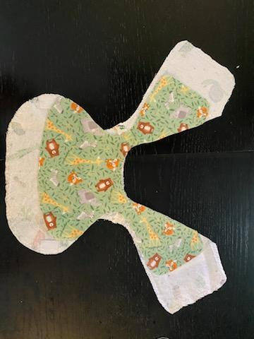
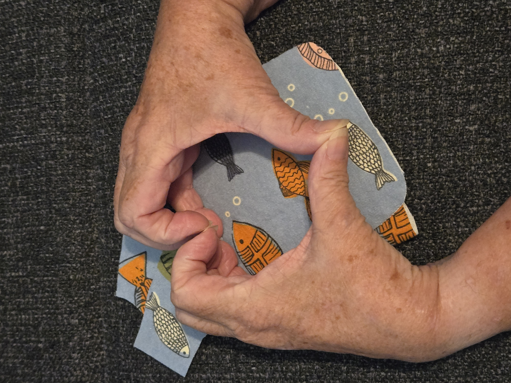
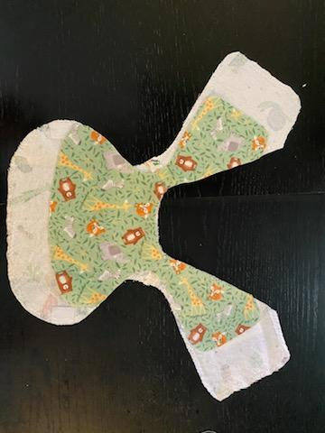
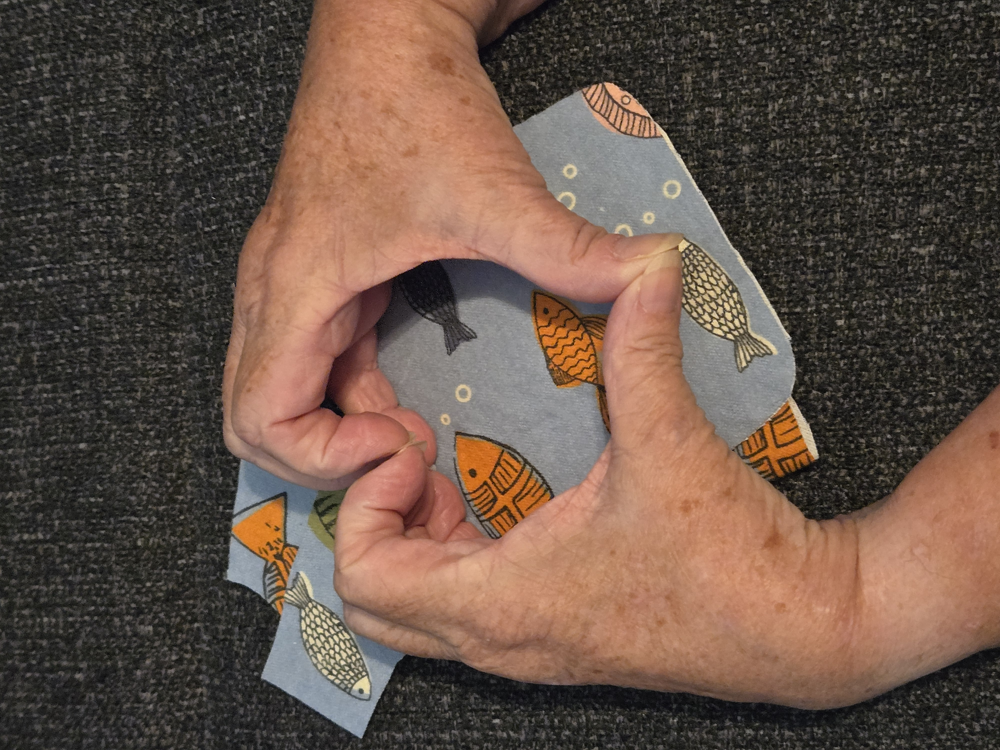

Summer 2023
Michelle finds pattern for preemie smocks.
Thank You! Thank You! Thank You!
Michelle finds pattern for preemie smocks.
Searched out pattern for preemie NICU Smock Pattern (Kymy Johnson). First purchase of fabric from Joann Fabrics (129.5 yards purchased). Laundering of fabric and items cut out/sewn.
Posting of "virtual baby shower" for Dell Children's Hospital NICU. First 95 smocks created and waiting on consultation for choice of closure of smock.
Velcro closure designed for smock.
Donation of an extra sewing machine. First smocks delivered to Michelle.
The first 47 smocks were delivered to the hospital. The staff will now launder at the hospital facilities, create shelf space for items and DRESS THE BABIES!!!
Staff is so excited with smocks. Head Dr of NICU saw them this morning and loved them. Pattern alteration for smock to fit the smallest babies completed.
 


